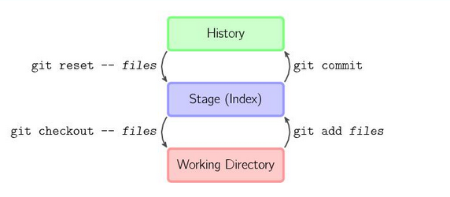

Git
Table of Contents
1 解决冲突的办法
1.1 内容冲突
直接编辑有冲突的文件。编辑成正确的格式。
1.2 树冲突
文件名修改造成的冲突，称为树冲突。 比如，a用户把文件改名为a.c，b用户把同一个文件改名为b.c，那么b将这两个commit合并时，会产生冲突。 $ git status added by us: b.c both deleted: origin-name.c added by them: a.c 如果最终确定用b.c，那么解决办法如下： git rm a.c git rm origin-name.c git add b.c git commit 执行前面两个git rm时，会告警“file-name : needs merge”，可以不必理会。
树冲突也可以用git mergetool来解决，但整个解决过程是在交互式问答中完成的，用d 删除不要的文件，用c保留需要的文件。 最后执行git commit提交即可。
2 git
2.1 初始化git目录
git init
2.2 添加文件
touch ReadMe.txt echo "some text" >> ReadMe.txt git add ReadMe.txt 或者用 git add -A添加所有 git commit -m "inital" 或者用 git commit -a -m "inital" 同时添加所有并提交
这个是一个很好的理解 modified、staged、commited这三种状态的图式 

2.3 远程仓库
1 创建SSH Key, 在主用户目录查看有没有 .ssh 目录，再看目录下面有没有idrsa和idrsa.pub这两个文件没有则创建
ssh-keygen -t rsa -C "weishijian@gmail.com"
1 在github中，Ａccount Settings -> SSH Keys -> Add SSH Key 中添加idrsa.pub中的内容。
2.4 在本地仓库添加一个“远程仓库”，当然远程仓库还是你自己的这个目录
执行 git remote add origin(此名称可以任意更换) https://github.com/path/.git%E4%B8%BA%E4%BB%93%E5%BA%93%E7%9A%84%E5%AE%9E%E9%99%85%E3%80%81%E7%BB%9D%E5%AF%B9%E8%B7%AF%E5%BE%84 例如：
git remote add origin https://github.com/weikent/learngit.git 此命令要在git仓库的目录下，及.git的同层目录下执行方可成功, origin可以为任意字符串，只是远程仓库的一个名称。
2.5 把本地仓库的master分支跟踪到远程分支上
git push origin <LocalBranchName> : <RemoteBranchName> git push -u origin master 如果本地有其他分支，也可以推送到远程服务器上 git push -u origin branch1
2.6 获取服务器的某个分支
git checkout -b <LocalBranchName> <RemoteBranchName>
或者用
git checkout -t <RemoteBranchName> 创建一个与远程分支名称相同的本地分支
远程分支名是诸如 "origin/branchname"
2.7 删除远程分支和tag
git push origin --delete <branchname> git push origin --delete tag <tagname>
也可以用这种方式
git push origin :<RemoteBranchName> 上面方式的原始语法是 git push origin <LocalBranchName> : <RemoteBranchName> 当本地发呢只为空的时候，可以理解为推送一个空分支到远程分支，即删除远程分支
3 解决中文乱码
git config --global core.quotepath false
core.quotepath 设置为false的话， 就不会对0 * 80以上的字符进行quote。 中文正常现实
4 git添加ssh
- ssh-keygen -t rsa -C "youremail@example.com"
- 在~/.ssh目录下把公钥上传到github
4.1 可能出现的错误
- Agent admitted failure to sign using the key
在命令行执行 ssh-add即可